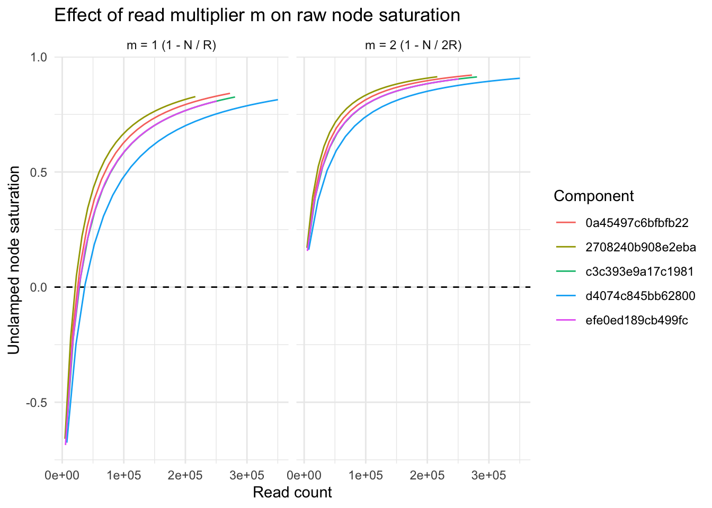
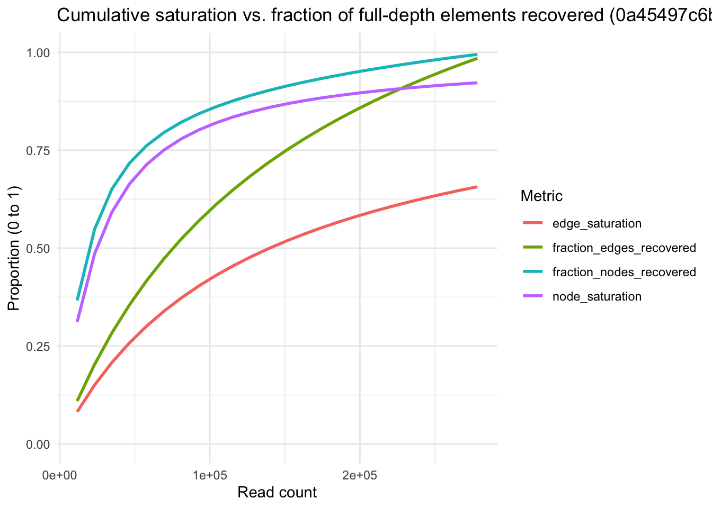
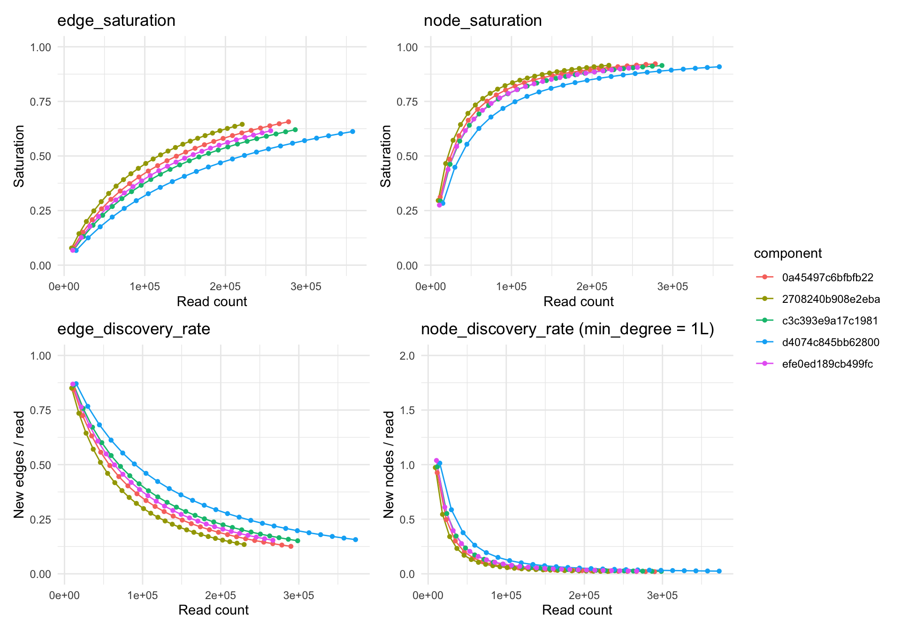
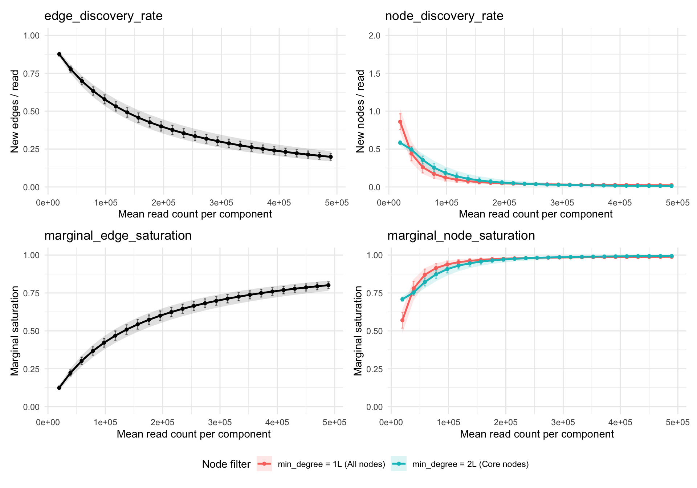

Sequencing Saturation and Discovery Rates in PNA Data
Introduction and motivation
Sequencing saturation is used to answer two practical questions about a sequencing library:
- What fraction of my reads are PCR duplicates rather than new molecules?
- How much new biological information would I gain by sequencing deeper?
In standard single-cell assays (such as scRNA-seq), each sequencing read observes a single molecule (UMI), and saturation is defined as:
S = 1 - \frac{U}{M}
where U is the number of unique elements observed and M = \sum_{i=1}^{U} m_i is the total number of element observations.
In Proximity Network Assays (PNA), the physical DNA amplicons being sequenced represent edges that connect two protein UMI nodes (umi1 and umi2) in a bipartite graph. Because edges are sequenced directly while nodes are inferred as the endpoints of those edges, edge-based and node-based saturation metrics behave very differently.
Code
min_pxl_file <- minimal_pna_pxl_file()
pbmc_pxl_file <- path.expand("~/1000cells/PBMCs_resting_S01_HG4.layout.pxl")
db_min <- PixelDB$new(min_pxl_file)
full_edge_min <- approximate_edge_saturation(db_min) |> collect()
full_node_min <- approximate_node_saturation(db_min) |> collect()
full_marg_min_deg1 <- marginal_saturation(db_min, min_degree = 1L) |> collect()
full_marg_min_deg2 <- marginal_saturation(db_min, min_degree = 2L) |> collect()
fracs_grid <- seq(0.04, 0.96, by = 0.04)
cum_curve_min <- approximate_saturation_curve(db_min, fracs = fracs_grid, verbose = FALSE)
marg_curve_min_deg1 <- marginal_saturation_curve(db_min, fracs = c(fracs_grid, 1.0), min_degree = 1L, verbose = FALSE)
marg_curve_min_deg2 <- marginal_saturation_curve(db_min, fracs = c(fracs_grid, 1.0), min_degree = 2L, verbose = FALSE)
db_min$close()
db_pbmc <- PixelDB$new(pbmc_pxl_file)
set.seed(7481)
pbmc_sampled_comps <- sample(colnames(db_pbmc$counts()), 100)
full_edge_pbmc_deg1 <- approximate_edge_saturation(db_pbmc, components = pbmc_sampled_comps, min_degree = 1L) |> collect()
full_edge_pbmc_deg2 <- approximate_edge_saturation(db_pbmc, components = pbmc_sampled_comps, min_degree = 2L) |> collect()
full_node_pbmc_deg1 <- approximate_node_saturation(db_pbmc, components = pbmc_sampled_comps, min_degree = 1L) |> collect()
full_node_pbmc_deg2 <- approximate_node_saturation(db_pbmc, components = pbmc_sampled_comps, min_degree = 2L) |> collect()
full_marg_pbmc_deg1 <- marginal_saturation(db_pbmc, components = pbmc_sampled_comps, min_degree = 1L) |> collect()
full_marg_pbmc_deg2 <- marginal_saturation(db_pbmc, components = pbmc_sampled_comps, min_degree = 2L) |> collect()
cum_curve_pbmc_deg1 <- approximate_saturation_curve(db_pbmc, fracs = fracs_grid, components = pbmc_sampled_comps, min_degree = 1L, verbose = FALSE)
marg_curve_pbmc_deg1 <- marginal_saturation_curve(db_pbmc, fracs = c(fracs_grid, 1.0), components = pbmc_sampled_comps, min_degree = 1L, verbose = FALSE)
marg_curve_pbmc_deg2 <- marginal_saturation_curve(db_pbmc, fracs = c(fracs_grid, 1.0), components = pbmc_sampled_comps, min_degree = 2L, verbose = FALSE)
db_pbmc$close()Why edge saturation works
For edges, each sequencing read is one observation of one edge:
- U = E (number of unique edges observed)
- M = R = \sum_{e=1}^{E} r_e (total sequencing reads, where r_e \ge 1 is the read count of edge e)
This gives:
S_{\text{edge}} = 1 - \frac{E}{R} = 1 - \frac{1}{\bar{r}_e}
where \bar{r}_e = \frac{R}{E} is the average number of reads supporting each unique edge.
edge_saturation is a direct, well-bounded measure of library PCR duplication:
- Every sequencing read either discovers a new unique edge or is a PCR duplicate of an already-observed edge. Thus R - E is the exact number of duplicate reads, and S_{\text{edge}} = \frac{R - E}{R} is the exact fraction of reads that are PCR duplicates.
- At very low depth where every edge is sequenced once (E = R), S_{\text{edge}} = 0.
- As read depth R \to \infty and all true edges have been observed, S_{\text{edge}} \to 1.
Why the read multiplier m = 2 is required for node saturation
When applying S = 1 - \frac{U}{M} to nodes (U = N unique nodes), the denominator M must count total node observations, not edge observations. In approximate_node_saturation() and approximate_saturation_curve(), this scaling factor is controlled by the node_reads_multiplier parameter, which we denote here simply as the read multiplier m.
Because PNA graphs are bipartite (umi1 and umi2 are disjoint sets of A- and B-nodes) and every read has two node endpoints, each sequencing read contributes 2 node observations (m = 2). Summing incident reads r_v across all N unique nodes yields:
M = \sum_{v=1}^{N} r_v = 2 \sum_{e=1}^{E} r_e = 2R
With a read multiplier of m = 2, cumulative node saturation is:
S_{\text{node}} = 1 - \frac{N}{2R} = 1 - \frac{1}{\bar{r}_v}
where \bar{r}_v = \frac{2R}{N} \ge 1 is the mean number of incident reads per node.
If m = 1 is used (1 - \frac{N}{R}), unique nodes are divided by edge reads. For a single read (R = 1, E = 1, N = 2), m = 1 gives 1 - 2/1 = -100\% saturation. More generally, whenever the downsampled graph has average degree \bar{d} < 2(1 - S_{\text{edge}}), N > R and m = 1 produces invalid negative values.
Code
db_mult <- PixelDB$new(min_pxl_file)
curve_mult2 <- approximate_saturation_curve(
db_mult,
fracs = seq(0.02, 0.96, by = 0.04),
node_reads_multiplier = 2,
verbose = FALSE
) |>
mutate(
raw_node_sat = 1 - nodes / (read_count * 2),
multiplier = "m = 2 (1 - N / 2R)"
)
curve_mult1 <- approximate_saturation_curve(
db_mult,
fracs = seq(0.02, 0.96, by = 0.04),
node_reads_multiplier = 1,
verbose = FALSE
) |>
mutate(
raw_node_sat = 1 - nodes / read_count,
multiplier = "m = 1 (1 - N / R)"
)
db_mult$close()
ggplot(
bind_rows(curve_mult2, curve_mult1),
aes(x = read_count, y = raw_node_sat, color = component)
) +
geom_hline(yintercept = 0, linetype = "dashed") +
geom_line() +
facet_wrap(~multiplier) +
labs(
title = "Effect of read multiplier m on raw node saturation",
x = "Read count",
y = "Unclamped node saturation",
color = "Component"
) +
theme_minimal()
Why cumulative node saturation (1 - N / 2R) is misleading
Even with the mathematically valid denominator 2R, cumulative node saturation S_{\text{node}} = 1 - \frac{N}{2R} has a conceptual flaw: it conflates PCR duplication with graph connectivity (average node degree).
In any graph with N nodes and E unique edges, the average node degree is \bar{d} = \frac{2E}{N}. Substituting \frac{N}{2E} = \frac{1}{\bar{d}} into S_{\text{node}} gives:
S_{\text{node}} = 1 - \frac{N}{2E} \cdot \frac{E}{R} = 1 - \frac{1}{\bar{d}}\left(1 - S_{\text{edge}}\right)
This identity shows why S_{\text{node}} looks high even when sequencing depth is very low:
- Nodes are observed multiple times even with zero PCR duplication: A node v can have many incident reads (r_v > 1) either because its edges were PCR-duplicated (r_e > 1) or because it is connected to several distinct edges (d_v > 1).
- High baseline floor at 0% edge saturation: Even when every unique edge has only 1 read (S_{\text{edge}} = 0), S_{\text{node}} = 1 - \frac{1}{\bar{d}}. In a graph with average degree \bar{d} = 5, S_{\text{node}} is already 80\% before a single PCR duplicate read is sequenced.
The plot below illustrates this on the 5 components in minimal_pna_pxl_file(): at p = 0.20 (~58k reads on component 0a45497c6bfbfb22), edge_saturation is only 30.1% and nearly a quarter of the full-depth nodes have not been discovered yet, but node_saturation already reports 71.4%.
Code
comp1_full <- full_node_min |>
filter(component == "0a45497c6bfbfb22") |>
pull(nodes)
comp1_edge_full <- full_edge_min |>
filter(component == "0a45497c6bfbfb22") |>
pull(edges)
cum_curve_min |>
filter(component == "0a45497c6bfbfb22") |>
mutate(
fraction_nodes_recovered = nodes / comp1_full,
fraction_edges_recovered = edges / comp1_edge_full
) |>
select(
read_count,
node_saturation,
edge_saturation,
fraction_nodes_recovered,
fraction_edges_recovered
) |>
pivot_longer(-read_count, names_to = "metric", values_to = "value") |>
ggplot(aes(x = read_count, y = value, color = metric)) +
geom_line(linewidth = 1) +
scale_y_continuous(limits = c(0, 1)) +
labs(
title = "Cumulative saturation vs. fraction of full-depth elements recovered (0a45497c6bfbfb22)",
x = "Read count",
y = "Proportion (0 to 1)",
color = "Metric"
) +
theme_minimal()
Why degree filtering (min_degree = 2) is desired
Impact of degree-1 leaves on full-edgelist saturation
In PNA cell graphs, roughly 19%–23% of all full-depth nodes have degree == 1 (dangling leaves attached to the component by a single edge), and 100% of single-read nodes (r_v = 1) have degree == 1.
When a 1-bp sequencing or PCR error occurs in one of the UMI barcodes (umi1 or umi2) of an abundant amplicon, the mutated barcode still pairs with the valid partner UMI on the other end of the amplicon. In the graph, this error attaches to the true node as a single-read, degree-1 leaf (d_v = 1, r_v = 1). Because sequencing errors occur at a roughly constant rate per read, deeper sequencing continuously adds new degree-1 leaves even after all true surface proteins have been captured.
For this reason, using min_degree = 2L is recommended when computing node discovery rates or when evaluating saturation on an unfiltered edgelist:
-
Component-level vs. full-sample edgelist impact: In a
.pxlfile, theedgelisttable only contains edges belonging to connected components that passed the cell-calling size threshold. Within these called cell components,min_degree = 2Lremoves the ~19%–23% of nodes that are degree-1 leaves (modestly shifting component-leveledge_saturationfrom ~58.4% to ~60.1%, while cutting full-depthnode_discovery_ratenearly in half). However, in the raw, pre-filtered sample edgelist (prior to component size filtering), there are many “orphaned” edges and tiny fragments—such as isolated single-read edges (d_{u} = 1, d_{v} = 1) arising from background noise, unattached antibodies, or sequencing errors—that are not attached to any cell component. When computing sample-wide saturation across the entire raw edgelist, amin_degree = 2Lfilter has a much larger impact because it strips out all isolated orphaned edges and degree-1 leaves, restricting the saturation estimate to edges integrated into multi-edge graph structures. - In
approximate_node_saturation(db, min_degree = 2L)andapproximate_edge_saturation(db, min_degree = 2L), filtering out degree-1 leaves restricts the calculation to the 2-core of the graph (edges where both endpoints havedegree >= 2), preventing single-read barcode error leaves and orphaned edges from deflatingedge_saturationor inflating apparent node counts. - In
marginal_saturation(db, min_degree = 2L)andmarginal_saturation_curve(db, min_degree = 2L),min_degree = 2Lmeasures the discovery rate of truedegree >= 2core nodes rather than degree-1 leaf noise.
(Note: In the pixelatorR codebase, the default argument is currently min_degree = 1L for backwards compatibility, so min_degree = 2L should be passed explicitly when core-graph metrics are desired.)
Code
pbmc_deg_comparison <- tibble(
`Degree Filter` = c("min_degree = 1L (Unfiltered)", "min_degree = 2L (Core graph)"),
`Mean Reads (R)` = c(mean(full_edge_pbmc_deg1$read_count), mean(full_edge_pbmc_deg2$read_count)),
`Mean Edges (E)` = c(mean(full_edge_pbmc_deg1$edges), mean(full_edge_pbmc_deg2$edges)),
`Mean Nodes (N)` = c(mean(full_marg_pbmc_deg1$nodes), mean(full_marg_pbmc_deg2$nodes)),
`Edge Saturation` = c(mean(full_edge_pbmc_deg1$edge_saturation), mean(full_edge_pbmc_deg2$edge_saturation)),
`Node Saturation` = c(mean(full_node_pbmc_deg1$node_saturation), mean(full_node_pbmc_deg2$node_saturation)),
`Edge Discovery Rate (dE/dR)` = c(mean(full_marg_pbmc_deg1$edge_discovery_rate), mean(full_marg_pbmc_deg2$edge_discovery_rate)),
`Node Discovery Rate (dN/dR)` = c(mean(full_marg_pbmc_deg1$node_discovery_rate), mean(full_marg_pbmc_deg2$node_discovery_rate)),
`New Nodes / +100k Reads` = round(c(mean(full_marg_pbmc_deg1$node_discovery_rate) * 1e5, mean(full_marg_pbmc_deg2$node_discovery_rate) * 1e5))
)
kable(
pbmc_deg_comparison,
digits = 4,
caption = "Comparison of full-depth component metrics across 100 randomly sampled resting PBMC components with min_degree = 1L vs. min_degree = 2L."
)| Degree Filter | Mean Reads (R) | Mean Edges (E) | Mean Nodes (N) | Edge Saturation | Node Saturation | Edge Discovery Rate (dE/dR) | Node Discovery Rate (dN/dR) | New Nodes / +100k Reads |
|---|---|---|---|---|---|---|---|---|
| min_degree = 1L (Unfiltered) | 489184.6 | 200634.8 | 66167.75 | 0.5868 | 0.9304 | 0.1986 | 0.0231 | 2306 |
| min_degree = 2L (Core graph) | 473849.6 | 188061.5 | 53594.48 | 0.6002 | 0.9417 | 0.1986 | 0.0121 | 1213 |
Dynamic degree filtering along downsampling curves
When tracking degree >= 2 core nodes across downsampling fractions p \in (0, 1], we must model degree >= 2 dynamically at fraction p rather than statically pre-filtering the graph at p = 1:
- If we statically pre-filter to
degree >= 2at p = 1, every retained node has at least 2 reads (r_v \ge 2), which forces the derivative of 1 - (1 - p)^{r_v} to artificially drop to 0 at p = 1. - Under the exact dynamic
degree >= 2model, a node v has dynamic degree \text{deg}_v(p) \ge 2 at fraction p if at least two of its incident edges are retained:
P(\text{deg}_v(p) \ge 2) = 1 - P(\text{deg}_v(p) = 0) - P(\text{deg}_v(p) = 1) = 1 + (d_v - 1)(1 - p)^{r_v} - \sum_{e \ni v} (1 - p)^{r_v - r_e}
This captures the graduation of degree-1 nodes into degree-2 core nodes as a second incident edge is sequenced.
Marginal discovery rates as saturation metrics
Mathematical definition and interpretation
Because cumulative saturation metrics average over all reads from 0 to R, they change slowly at high sequencing depth. A more direct way to answer “Should I sequence deeper?” is to look at the marginal discovery rate—the instantaneous slope of the discovery curve with respect to sequencing reads R(p) = pR:
\text{edge\_discovery\_rate}(p) = \frac{d\,\mathbb{E}[E(p)]}{dR(p)} = \frac{1}{R} \sum_{e=1}^{E} r_e (1 - p)^{r_e - 1}
\text{node\_discovery\_rate}(p) = \frac{d\,\mathbb{E}[N(p)]}{dR(p)}
-
How to read
edge_discovery_rate(bounds [0, 1]): The expected number of new unique edges discovered per additional read. At p \to 0, every read discovers 1 new edge; at full depth (p = 1), \text{edge\_discovery\_rate}(1) = \frac{E_1}{R} (the fraction of reads supporting singleton edges). Multiplyingedge_discovery_rateby 100{,}000 gives the expected number of new edges gained if you sequence +100{,}000 additional reads per cell. -
How to read
node_discovery_rate(bounds [0, 2]): The expected number of new unique nodes discovered per additional read. Because each read has 2 endpoints (umi1andumi2), the very first reads at p \to 0 discover up to 2 new nodes per read (formin_degree = 1L). In practice, multiplyingnode_discovery_rateby 100{,}000 gives a direct, upper-bound estimate of how many new nodes you will gain by sequencing +100{,}000 additional reads per cell (since the slope continues to decay as depth increases). - Marginal (Good-Turing) saturation (bounds [0, 1]): The probability that the next observation lands on an already-observed element:
S_{\text{marginal, edge}}(p) = 1 - \text{edge\_discovery\_rate}(p), \qquad S_{\text{marginal, node}}(p) = 1 - \frac{\text{node\_discovery\_rate}(p)}{2}
Results on minimal_pna_pxl_file()
The table and curves below show the full-depth values and downsampling trajectories for all 5 components in minimal_pna_pxl_file():
Code
min_summary_table <- full_edge_min |>
rename(reads = read_count) |>
left_join(
full_node_min |> select(component, nodes, node_saturation),
by = "component"
) |>
left_join(
full_marg_min_deg1 |> select(
component,
edge_discovery_rate,
node_disc_deg1 = node_discovery_rate,
marginal_edge_saturation,
marg_node_sat_deg1 = marginal_node_saturation
),
by = "component"
) |>
left_join(
full_marg_min_deg2 |> select(
component,
core_nodes = nodes,
node_disc_deg2 = node_discovery_rate
),
by = "component"
) |>
mutate(
new_nodes_100k_deg1 = round(node_disc_deg1 * 1e5),
new_nodes_100k_deg2 = round(node_disc_deg2 * 1e5)
)
kable(
min_summary_table,
digits = 4,
caption = "Full-depth saturation and marginal discovery rates for minimal_pna_pxl_file()."
)| component | edges | reads | edge_saturation | nodes | node_saturation | edge_discovery_rate | node_disc_deg1 | marginal_edge_saturation | marg_node_sat_deg1 | core_nodes | node_disc_deg2 | new_nodes_100k_deg1 | new_nodes_100k_deg2 |
|---|---|---|---|---|---|---|---|---|---|---|---|---|---|
| d4074c845bb62800 | 141153 | 372618 | 0.6212 | 65712 | 0.9118 | 0.1565 | 0.0246 | 0.8435 | 0.9877 | 50105 | 0.0189 | 2455 | 1887 |
| efe0ed189cb499fc | 100132 | 266795 | 0.6247 | 48636 | 0.9089 | 0.1536 | 0.0250 | 0.8464 | 0.9875 | 37171 | 0.0208 | 2503 | 2082 |
| 2708240b908e2eba | 79638 | 229977 | 0.6537 | 37665 | 0.9181 | 0.1341 | 0.0221 | 0.8659 | 0.9889 | 28944 | 0.0158 | 2212 | 1584 |
| c3c393e9a17c1981 | 110657 | 298516 | 0.6293 | 49351 | 0.9173 | 0.1513 | 0.0223 | 0.8487 | 0.9889 | 38146 | 0.0154 | 2227 | 1545 |
| 0a45497c6bfbfb22 | 97014 | 289856 | 0.6653 | 43543 | 0.9249 | 0.1257 | 0.0196 | 0.8743 | 0.9902 | 33731 | 0.0121 | 1964 | 1205 |
Code
p_min_esat <- ggplot(cum_curve_min, aes(x = read_count, y = edge_saturation, color = component)) +
geom_line() +
geom_point(size = 1.2) +
scale_y_continuous(limits = c(0, 1)) +
labs(title = "edge_saturation", x = "Read count", y = "Saturation") +
theme_minimal()
p_min_nsat <- ggplot(cum_curve_min, aes(x = read_count, y = node_saturation, color = component)) +
geom_line() +
geom_point(size = 1.2) +
scale_y_continuous(limits = c(0, 1)) +
labs(title = "node_saturation", x = "Read count", y = "Saturation") +
theme_minimal()
p_min_edisc <- ggplot(marg_curve_min_deg1, aes(x = read_count, y = edge_discovery_rate, color = component)) +
geom_line() +
geom_point(size = 1.2) +
scale_y_continuous(limits = c(0, 1)) +
labs(title = "edge_discovery_rate", x = "Read count", y = "New edges / read") +
theme_minimal()
p_min_ndisc <- ggplot(marg_curve_min_deg1, aes(x = read_count, y = node_discovery_rate, color = component)) +
geom_line() +
geom_point(size = 1.2) +
scale_y_continuous(limits = c(0, 2)) +
labs(title = "node_discovery_rate (min_degree = 1L)", x = "Read count", y = "New nodes / read") +
theme_minimal()
(p_min_esat + p_min_nsat) / (p_min_edisc + p_min_ndisc) +
plot_layout(guides = "collect")
Results on resting PBMC components (PBMCs_resting_S01_HG4.layout.pxl)
Across 100 randomly sampled cells in the resting PBMC dataset (mean read depth 489,185 reads/cell), the plots below show the mean and \pm 1\text{ SD} error bars (plus 5th–95th percentile ribbons) for both min_degree = 1L and min_degree = 2L:
Code
pbmc_curve_summary <- bind_rows(
marg_curve_pbmc_deg1 |>
select(component, p, read_count, edge_discovery_rate, marginal_edge_saturation) |>
pivot_longer(
c(edge_discovery_rate, marginal_edge_saturation),
names_to = "metric",
values_to = "value"
) |>
mutate(group = "Edges"),
marg_curve_pbmc_deg1 |>
select(component, p, read_count, node_discovery_rate, marginal_node_saturation) |>
pivot_longer(
c(node_discovery_rate, marginal_node_saturation),
names_to = "metric",
values_to = "value"
) |>
mutate(group = "min_degree = 1L (All nodes)"),
marg_curve_pbmc_deg2 |>
select(component, p, read_count, node_discovery_rate, marginal_node_saturation) |>
pivot_longer(
c(node_discovery_rate, marginal_node_saturation),
names_to = "metric",
values_to = "value"
) |>
mutate(group = "min_degree = 2L (Core nodes)")
) |>
group_by(metric, group, p) |>
summarise(
mean_reads = mean(read_count, na.rm = TRUE),
mean_val = mean(value, na.rm = TRUE),
sd_val = sd(value, na.rm = TRUE),
q05 = quantile(value, 0.05, na.rm = TRUE),
q95 = quantile(value, 0.95, na.rm = TRUE),
.groups = "drop"
)
plot_pbmc_panel <- function(df, metric_name, y_limits, y_label) {
sub_df <- df |> filter(metric == metric_name)
has_groups <- n_distinct(sub_df$group) > 1
p <- if (has_groups) {
ggplot(sub_df, aes(x = mean_reads, y = mean_val, color = group, fill = group))
} else {
ggplot(sub_df, aes(x = mean_reads, y = mean_val))
}
p +
geom_ribbon(aes(ymin = q05, ymax = q95), alpha = 0.15, color = NA) +
geom_errorbar(
aes(ymin = pmax(y_limits[1], mean_val - sd_val), ymax = pmin(y_limits[2], mean_val + sd_val)),
width = 4000,
alpha = 0.5
) +
geom_line(linewidth = 0.9) +
geom_point(size = 1.3) +
scale_y_continuous(limits = y_limits) +
labs(
title = metric_name,
x = "Mean read count per component",
y = y_label,
color = "Node filter",
fill = "Node filter"
) +
theme_minimal()
}
(plot_pbmc_panel(pbmc_curve_summary, "edge_discovery_rate", c(0, 1), "New edges / read") +
plot_pbmc_panel(pbmc_curve_summary, "node_discovery_rate", c(0, 2), "New nodes / read")) /
(plot_pbmc_panel(pbmc_curve_summary, "marginal_edge_saturation", c(0, 1), "Marginal saturation") +
plot_pbmc_panel(pbmc_curve_summary, "marginal_node_saturation", c(0, 1), "Marginal saturation")) +
plot_layout(guides = "collect") &
theme(legend.position = "bottom")
At full depth (~489k reads/cell) on this PBMC dataset, we can translate the discovery rates directly into what you would gain from sequencing +100{,}000 additional reads per cell (~21% deeper sequencing):
-
Protein/node discovery is near-saturated:
node_discovery_rateis 0.0231 total nodes per read (2,306 new nodes per +100{,}000 reads, or 23.1 per 1,000 reads), and only 0.0121 core nodes per read (1,213 new core nodes per +100{,}000 reads, or 12.1 per 1,000 reads) whenmin_degree = 2L. Because the discovery rate continues to decrease with depth, +100{,}000 additional reads per cell would add fewer than 1,213 core nodes (less than a 2.3% increase over the current 53,594 core nodes). -
Nearly half of new nodes at full depth are degree-1 leaves: Comparing
min_degree = 1L(2,306 nodes per +100{,}000 reads) againstmin_degree = 2L(1,213 core nodes per +100{,}000 reads) shows that ~47% of newly discovered nodes at full depth (1,093 per +100{,}000 reads) are dangling degree-1 leaves. -
New edges mostly densify existing nodes:
edge_discovery_rateis 0.1986 (19,858 new edges per +100{,}000 reads, or 198.6 per 1,000 reads), meaning ~90% of newly discovered edges at this depth connect two nodes that are already in the component.
Summary recommendations
| Use Case | Recommended Function & Metric | Recommended Parameters | Why |
|---|---|---|---|
| Overall PCR duplication rate |
approximate_edge_saturation() \to edge_saturation (1 - E/R) |
min_degree = 2L (core graph) or 1L (all reads) |
Directly measures the fraction of reads that are PCR duplicates of observed amplicon edges; min_degree = 2L excludes degree-1 error leaves. |
| Deciding whether to sequence deeper (protein/node recovery) |
marginal_saturation() & marginal_saturation_curve() \to node_discovery_rate (dN/dR) |
min_degree = 2L |
Measures the exact instantaneous yield of new core nodes per additional read while excluding single-read degree-1 leaf noise. |
| Deciding whether to sequence deeper (graph edge density) |
marginal_saturation() & marginal_saturation_curve() \to edge_discovery_rate (dE/dR) |
min_degree = 1L or 2L
|
Measures the instantaneous yield of new unique edges per additional read (1 - \text{marginal\_edge\_saturation}). |
| Cumulative node saturation |
approximate_node_saturation() \to node_saturation (1 - N/2R) |
m = 2 (default), min_degree = 2L
|
Always keep m = 2 (node_reads_multiplier = 2) so values remain in [0, 1), but interpret with caution because 1 - N/2R is confounded by average node degree \bar{d}. |